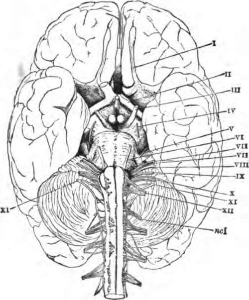

The Cranial Nerves
Description
This section is from the book "The Human Body: An Elementary Text-Book Of Anatomy, Physiology, And Hygiene", by H. Newell Martin. Also available from Amazon: The Human Body.
The Cranial Nerves
Twelve pairs of nerves leave the skull cavity by apertures in its base; they are known as the cranial nerves. Most of them spring from the under side of the brain, which is represented in Fig. 84. The first pair, or olfactory nerves, are the nerves of smell; they arise from the under sides of the olfactory lobes, I, and pass out through the roof of the nose. The second pair, or optic nerves, II, are the nerves of sight; they spring from the mid-brain, and, under the name of the optic tracts, run down to the under side of the fore-brain, where they unite to form the optic commissure, from which an optic nerve proceeds to each eyeball.
Is the surface of most of the brain smooth? What are the folds called? How does a man's brain differ, as regards its convolutions, from an ape's?
Of what does the brain consist? How does the arrangement of white and gray matter in it differ from that of the spinal cord? How is the surface on which the gray matter is spread increased?
How many cranial nerves are there? Where do most of them originate? Name the first pair. Where do they arise? Where do they pass out? Name the second pair. What are the optic tracts?
Fig. 84. The base of the brain. The cerebral hemispheres are seen overlapping all the rest. I, olfactory lobes; II, optic tract passing to the optic commissure from which the optic nerves proceed; III. the third nerve or motor oculi; IV, the fourth nerve or patheticus; V, the fifth nerve or trigeminalis; VI. the sixth nerve or abducens; VII, the seventh or facial nerve or portio dura; VIII, the auditory nerve or portio mollis; IX, the ninth or glossopharyngeal, X, the tenth or pneumogastric or vagus; XI, the spinal accessory; XII, the hypoglossal; ncI, the first cervical spinal nerve.
All the remaining cranial nerves arise from the hind-brain. The third pair, III., (motores oculi, or movers of the eyeball,) are distributed to most of the muscles which move the eyeball and also to that which lifts the upper eyelid.
What is the optic commissure? Where does each optic nerve go? How many pairs of cranial nerves arise from the hind-brain? Name the third pair. What is their distribution?
The fourth pair, IV, (pathetici,) are quite small; each goes to one muscle of the eyeball.
The fifth pair of cranial nerves, V, (trigeminals,) resemble the spinal nerves in having two roots, one of which possesses a ganglion (the Gasserian ganglion). Beyond the ganglion the two roots form a common trunk which divides into three main branches. The first of these, the ophthalmic, is distributed to the muscles and skin over the forehead and upper eyelid; and also gives branches to the mucous membrane lining the nose, and to the integument over that organ. The second division (superior maxillary nerve) of the trigeminal gives branches to the skin over the temple, to the cheek between the eyebrow and the angle of the mouth, and to the upper teeth; as well as to the mucous membrane of the nose, pharynx, soft palate and roof of the mouth. The third division (inferior maxillary) is the largest branch of the trigeminal. It is distributed to the side of the head and the external ear, the lower lip and lower part of the face, the mucous membrane of the mouth and the anterior two thirds of the tongue, the lower teeth, the salivary glands, and the muscles which move the lower jaw in mastication.
The sixth pair of cranial nerves, VI, (abducentes,) are distributed each to one muscle of the eyeball on its own side.
What is the distribution of the fourth pair?
Name the fifth pair of cranial nerves. How do they resemble the spinal nerves? What is the ganglion on one root called? Into how many main branches does the common trunk divide? Name the first branch. State its distribution. The second branch. Its distribution. The third main branch. Its distribution.
Name the sixth pair of cranial nerves. Where do they go?
The seventh pair (facial nerves), VII, are distributed to most of the muscles of the face and scalp.
The eighth pair (auditory nerves), VIII, are the nerves of hearing, and are distributed to the inner part of the ear.
The ninth pair of cranial nerves (glosso-pharyngeal), IX, are distributed chiefly to tongue and pharynx.
The tenth pair (pneumogastric nerves or vagi), X, give branches to the pharynx, gullet and stomach, the larynx, windpipe and lungs, and to the heart. The vagi run farther through the body than any other cranial nerves.
The eleventh pair (spinal accessory nerves), XI, do not arise mainly from the brain, but from the spinal cord by a number of roots attached to its upper portion, between the anterior and posterior roots of the proper spinal nerves. Each enters the skull cavity alongside of the spinal cord and, getting a few filaments from the medulla oblongata, passes out by the same aperture as the glosso-pharyngeal and pneumogastric nerves. Outside the skull the spinal accessory divides into two branches, one of which joins the pneumogastric trunk, while the other is distributed to muscles about the shoulders.
The twelfth pair of cranial nerves (hypoglossi), XII, are distributed mainly to the muscles of the tongue.
Continue to: